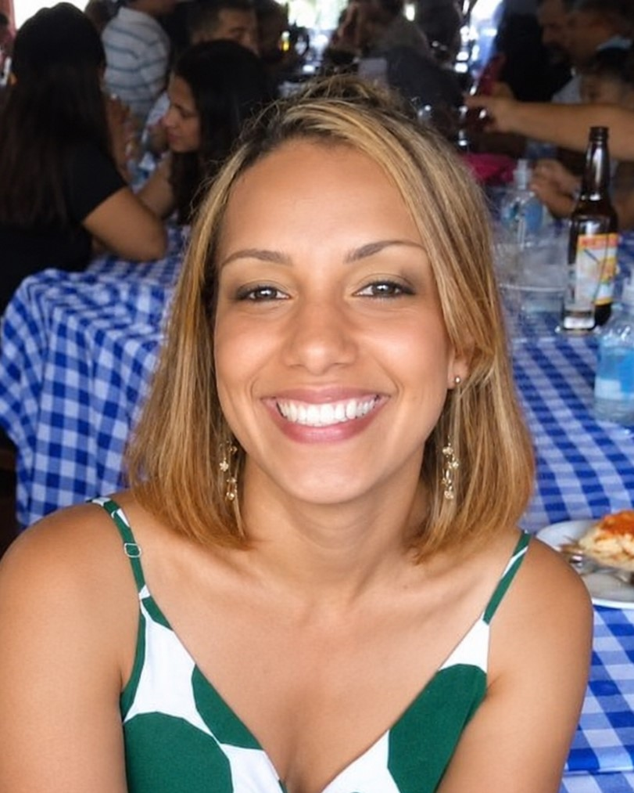

Ana Paula de Oliveira Silva
Reinventar-se por Amor: A Trajetória de Coragem e Superação (42 anos)
Aos 42 anos, Ana Paula de Oliveira Silva carrega uma história marcada pela dedicação à família e por uma coragem admirável para transformar os rumos da sua vida. Nascida em uma família marcada pela presença forte da mãe — que administrava um restaurante onde ela e as três irmãs ajudavam desde cedo —, esta trajetória carrega desde a infância o amor pelo atendimento ao público e o desejo latente de empreender. O sonho inicial de infância era a medicina, mas a falta de recursos financeiros direcionou seus passos para a enfermagem e, posteriormente, para a administração com ênfase em Recursos Humanos, enquanto trabalhava no Banco Unibanco.
Após seis anos de dedicação ao setor bancário e subsequentes experiências frustrantes no setor de RH corporativo, uma virada de chave aconteceu. Grávida e desejando vivenciar plenamente a primeira infância da filha — algo que sentia não ter conseguido acompanhar totalmente com o filho mais velho, Hiago —, ela tomou a corajosa decisão de mudar de rumo. Com o apoio moral e financeiro do marido, deu início à sua jornada autônoma no setor de transporte e apoio escolar.
Desafios, Superação e Rede de Apoio
- O Grande Desafio: Enfrentar a instabilidade da pandemia de COVID-19 com apenas seis meses de atuação no novo negócio, tendo uma van financiada para pagar e o marido desempregado.
- A Força para Continuar: A perseverança, a união familiar e a fé inabalável em Deus foram os pilares para superar a crise e vencer esse período crítico.
- Rede de Apoio e Inspiração: Tendo quatro irmãs mais velhas e um pai e mãe como base, sua principal inspiradora foi a irmã que desbravou primeiro o caminho do transporte escolar.
Ao refletir sobre o significado de ser uma mulher que inspira, ela destaca a importância de mostrar que é plenamente possível dar a volta por cima, mudar de carreira quando algo já não faz sentido e conciliar o desenvolvimento profissional com o cuidado e a dedicação à família.
Para as meninas e mulheres que estão começando a traçar seus próprios caminhos, o conselho é direto e encorajador: